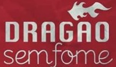

O Dragão sem Fome é um projeto criado desde 2005 pela Órbita Bar que tem como finalidade atenuar a situação das populações em risco social que habitam nos arredores dos Dragão do Mar, tendo domo meta atuar no desenvolvimento de atividades contra a exclusão social, através da adoção de medidas práticas, tais como arrecadação e distribuição de produtos e alimentos às comunidades carentes. O projeto é sem fins lucrativos, de utilidade pública e de caráter apartidário.
De um lado, o imponente e luxuoso Centro Dragão do Mar, do outro, a escassez de recursos básicos da comunidade Poço da Draga. Desse abismo social surgiu a necessidade do Órbita Bar de tentar amenizar essa desigualdade desenhada entre Dragão e a comunidade mais próxima deste. Além disso, a idéia de fazer um trabalho interno de conscientização social de sua própria equipe pareceu interessante à Órbita. Esse foi o mote inicial. “Quando nos apercebemos dessa comunidade tão carente de coisas básicas e absurdamente perto de nós, não tivemos dúvidas de que era exatamente ali que um projeto social deveria começar. Ajudar o próximo é sempre bom, claro. Mas acho que devemos começar com o “próximo mais próximo”. sou adepta de um velho provérbio chinês que diz: “Se você quer mudar o mundo, comece então pela sua própria casa”, afirma Patrícia Carvalhedo, proprietária da Órbita Bar e idealizadora do projeto.
No primeiro ano, o Dragão sem Fome arrecadou alimentos e doou os alimentos e doou somente para a ONG Vela ao Mar, cuja sede é dentro da comunidade Poço da Draga. Hoje em dia o projeto já auxilia diretamente 14 ONGs e indiretamente mais de 74… Já que dentro desse número estão contidas 2 associações, as quais possuem ainda outras ONGs ligadas às mesmas.
Fazendo jus ao nome, o projeto, tem como foco principal a doação de alimentos às comunidades carentes, e como este ano, as ONGS estão muito carentes de gêneros alimentícios para crianças, achamos por bem escolher o LEITE como o produto para toda esta campanha. Os produtos arrecadados são entregues a Associações e Entidades devidamente pesquisadas quanto verificação da idoneidade dos seus trabalhos, mediante recibos e compromisso de apresentação de relatórios.
Durante os meses dezembro e janeiro, todas os clientes ao ingressarem no Órbita Bar devem portar uma lata de leite em pó. Caso o cliente não possua o produto, será cobrada a taxa de R$5,00.
Lembramos que toda e qualquer participação é importante, independente da quantidade doada ou da ação realizada, pois o objetivo do projeto não é apenas arrecadar e distribuir alimentos, mas mobilizar e conscientizar a sociedade de seu papel social ajudando a transformar a situação de miséria em que vivem tantas pessoas. Por isso achamos importante mudar o tipo produto semanalmente. “Sem pretensão achamos que de certa forma isso vai ensinando um pouquinho de responsabilidade social”, diz Patrícia.
Sempre contamos com o apoio popular e ficamos orgulhosos ao constatar que o Dragão sem Fome tenha chegado até aqui de forma bem sucedida apesar da ausência de parcerias. Contudo sabemos que ainda temos muito que realizar e para isso torna-se necessário um trabalho mais estruturado e com as condições básicas que u projeto que alcançou essa importância merece. Notamos assim, que existe uma necessidade eminente de mais projeção e reconhecimento a fim de ampliar as ações do projeto.
Por esse motivo, nosso objetivo em é angariar mais parceiros a fim de consolidar o Dragão sem Fome. Faz-se necessário portanto contar com o apoio de empresas, para que possamos juntos continuar realizando Dragão sem Fome tornando-o maior. Já chegamos a arrecadar em um ano, quase 13 toneladas de alimentos, com ajuda, pretendemos passar da marca de 20 toneladas. :-).
DRAGÃO SEM FOME
Local: Órbita Bar, Rua Dragão do Mar, 207 – Praia de Iracema
Fone: (85)3453.1421
O que doar: uma lata de leite (ou R$ 5,00)